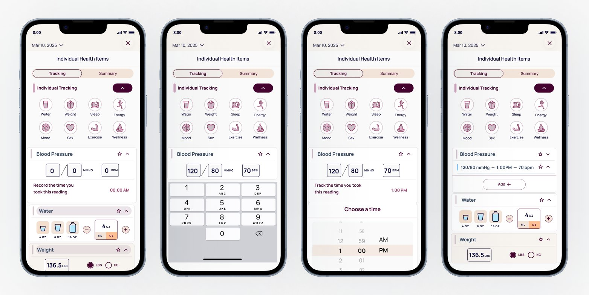
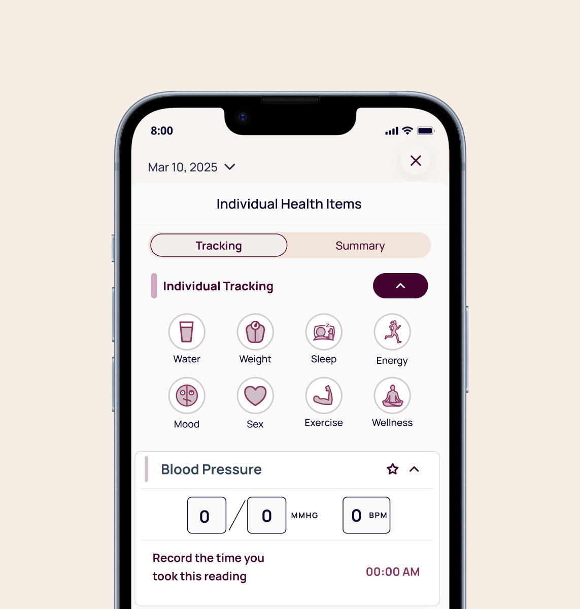
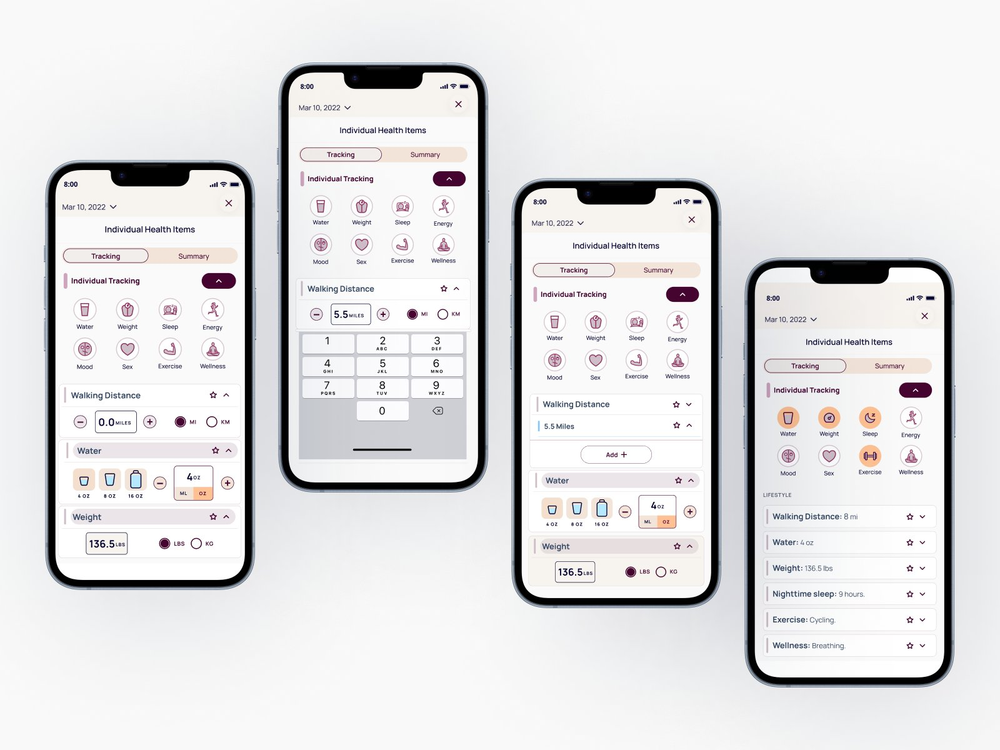
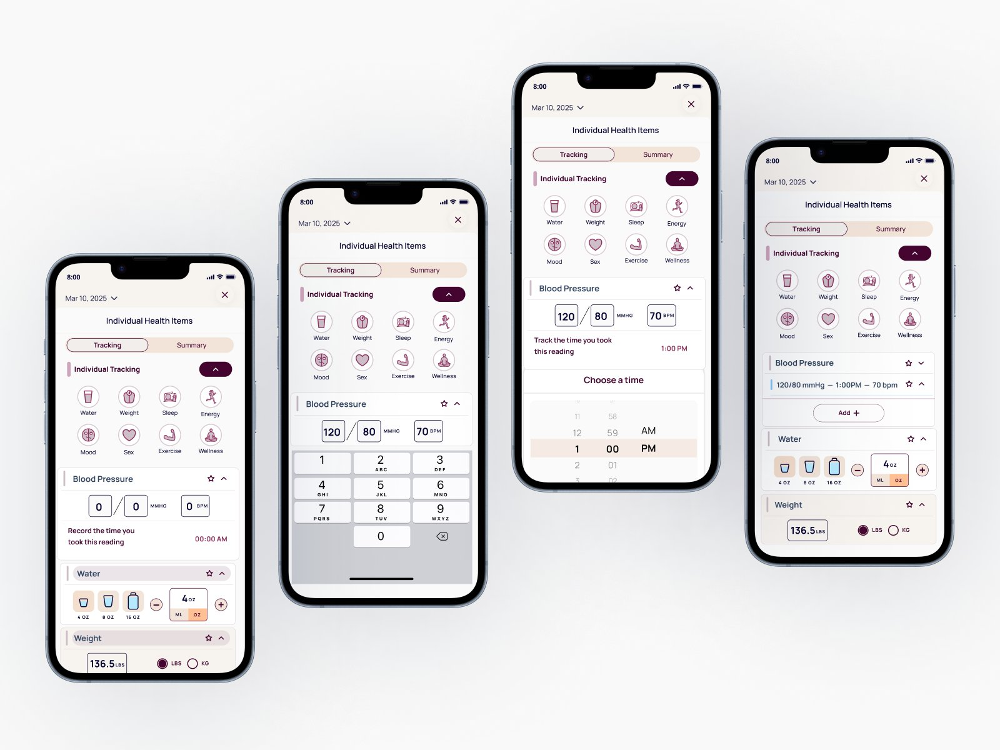

A metrics system built for integration
Ourself Health needed 21 health metrics designed to work with manual entry now and switch to Apple Health, Fitbit, and Google Fit data once device syncing is ready. I matched each one to how those platforms already show it, down to the units, so engineering would have a direct reference to build from. The team also got a model for classifying every metric that comes after.

Fig 01. Blood pressure metric across four screens: entry, data input, time selection, and collapsed summary
Ourself Health is a wellness app focused on longevity and daily habits. It's built to pull fitness data from Apple Health, Fitbit, and Google Fit into one place, so people can see their health across all their devices.
Device syncing wasn't ready yet, so the app needed a tracking interface that worked with manual entry first and could switch to live data later without a redesign. The brief was strict about how to get there. I couldn't introduce new UX patterns, and every metric had to match how Apple Health, Fitbit, or Google Fit already presents it.
That got tricky with metrics like Walking Asymmetry, step cadence, and cycling speed. Phones and watches calculate these from sensors, and nobody can estimate them by hand. The interface had to cover those placeholder states and the eventual synced states with one set of components.
I audited how Apple Health, Fitbit, and Google Fit handle each metric: how it's measured, how it's totaled or averaged over a day, how it's displayed, and what changes once device data comes in. The same metric can be calculated differently on each platform, so I needed to understand the data logic and not only the screens. I used Claude along the way to check whether my read on each platform held up.
Take two Apple Health metrics. Flights Climbed is a count that keeps adding up through the day, while Walking Asymmetry is a percentage the iPhone estimates from how you walk. Differences like that decided which category each metric went into and how its screens behaved.

Fig 02. Individual tracking screen showing metric categories and the blood pressure entry state
Based on the audit, I sorted every metric into one of two categories. Each category had its own rules for how a metric behaves during manual entry and after device syncing.
Category 1
Metrics like cadence and cycling speed come straight from sensor data. Once a device is connected they show as a daily value, and until then they show a placeholder clearly marked as device-only.
Category 2
Metrics like Heart Points and Move Minutes build up over the course of a day, so people can enter a daily total by hand until syncing is ready. Both come from Google Fit, so they follow Google Fit's units and display.
Rules for both categories:
For each metric, I matched the Apple Health, Fitbit, or Google Fit version: the name, the unit, how it's displayed, and how people expect to interact with it. Every metric has an empty entry state, a data input state, and a collapsed summary, plus a time picker for metrics that need one.
Example 1
Heart Points is a Google Fit metric that builds up through the day based on how hard you're moving. Until syncing launches, people enter it as a daily total, using Google's unit and threshold language as written.
Example 2
Step cadence is measured in steps per minute and cycling cadence in RPM, and sensors calculate both continuously. They show as daily averages, with a locked entry state and a placeholder label until device data comes in.
Example 3
Apple Health estimates both from the iPhone's motion sensors, and neither is something a person could work out by hand. These got the most careful placeholder treatment, marked as device-only with no way to enter a value.

Fig 03. Walking Distance metric: entry, data input, time selection, and collapsed summary

Fig 04. Blood Pressure metric: entry, data input, time selection, and collapsed summary
The team came away with designs for all 21 metrics and a classification model they can use to sort new metrics before anyone starts designing them.
Matching another platform exactly meant spending a lot of time on small things, like units, labels, and the wording on placeholder states. If a metric showed a plain step count where Apple Health shows steps per minute, engineering would have had to come back and fix it once syncing goes live.
I used Claude to test my read on how each platform calculated a metric, and to tighten the microcopy across all 21 designs. With health data, a wrong unit or label can mislead someone, so I wanted a second check before anything went to engineering.
What I'd do differently: I built the classification model partway through the project, after running into metrics that didn't fit either category cleanly. If I'd set it up in the first week, my early conversations with the product team would have been more focused. We spent time in those first check-ins debating edge cases that the model would have settled quickly.